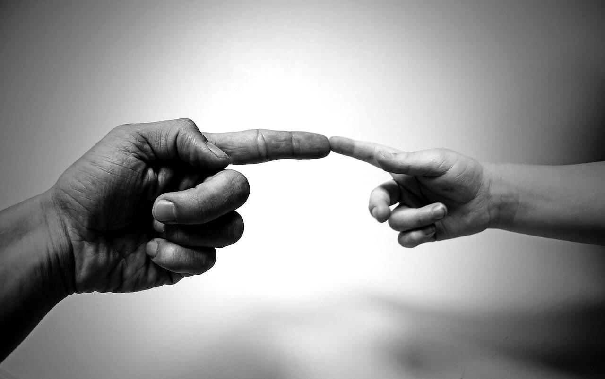

Relationships and Emotions
July 5, 2025

How to deal with criticism and rejection with emotional maturity
Article by: José Mussagy (JIM):
No one likes to be criticized or rejected. But, as uncomfortable as it may be, these experiences are part of life—both personal and professional. The problem is not criticism or rejection itself, but how we react to it. If you feel that criticism affects you deeply or that rejection paralyzes your actions, this article is for you. Learn now how to develop emotional maturity to deal with these challenges with intelligence, balance, and growth.
1. Understand what is behind the criticism
Not all criticism is negative. Some comes from people who want to help, others are just projections from the other person. The first step is to evaluate the intention and content of the criticism.
Practical tip: Ask yourself, “What can I learn from this?” Even malicious criticism can show you something valuable.
2. Separate criticism from your identity
You are not what others say about you. Rejection does not diminish your value. Criticism of your work is not an attack on you as a person.
Technique: Use statements such as “this is an opinion, not a fact about me” to reinforce your self-esteem.
3. Breathe before reacting.
Criticism hurts more when you react in the heat of the moment. A 5-second pause can prevent words and actions you will regret.
Exercise: Breathe in deeply for 4 seconds, hold for 4, breathe out for 6. Repeat. This helps you respond with reason rather than anger.
4. Rejection is redirection
Being rejected for a job, project, or person may seem like the end. But often it's just the universe saying, “not here, not now.”
Reframing: Every rejection opens up space for a new opportunity. Shift your focus: “What else can I do with what I know now?”
5. Strengthen your self-esteem daily
The best defense against destructive criticism is a strong sense of inner value. Invest in self-knowledge, practice self-love, celebrate your achievements.
Practical suggestion: Write down 3 qualities you have and 3 things you did well during the day. Make it a habit.
Conclusion:
Criticism and rejection are part of everyone's journey as they grow up. With emotional maturity, you stop being a hostage to other people's judgments and start using each experience as a stepping stone for your own growth.
Want to explore this topic further? Check out the ebook “Self-Love: The Foundation of Every Healthy Relationship", where you'll find practical tools to strengthen your identity and deal with criticism in a balanced way.
Request yours via WhatsApp - +25887282707 and receive it by email.
This is the only official channel. Beware of fake contacts.
July 5, 2025

Toxic love: how to identify and break free from destructive relationships
Article by: José Mussagy (JIM)
Not all love is healthy. Sometimes, we are stuck in a relationship that consumes more than it adds. Toxic relationships drain energy, undermine self-esteem, and distance us from our essence. This post is a practical guide to help you identify signs of toxic love, understand its consequences, and learn effective ways to break this destructive cycle.
What is toxic love?
It is a relationship in which one or both parties are constantly hurt—whether through words, actions, control, or emotional manipulation. It is a bond based on dependence, fear, or guilt, rather than respect, trust, and growth.
Signs that you are in a toxic relationship
A toxic relationship can manifest itself in many ways. Some clear signs include:
Excessive control: your partner monitors your movements, your friendships, and even your social media.
Constant criticism: everything you do is criticized, and your efforts are rarely recognized.
Emotional manipulation: you are often blamed or made to believe that you are the problem.
Unhealthy jealousy: exaggerated displays of possessiveness or distrust without real reasons.
Isolation: your partner tries to distance you from family or friends in order to control you.
Emotional instability: moments of affection followed by outbursts of anger or coldness.
Lack of support: instead of encouraging your dreams and goals, the person devalues or ridicules them.
Constant fear: you are afraid to speak, express yourself, or act so as not to “provoke” conflict.
Emotional exhaustion: you feel exhausted, anxious, or sad most of the time.
Emotional dependence: you feel that you cannot live without the person, even though you are unhappy.
Why is it difficult to leave?
Breaking this type of bond is not easy. Some common reasons include:
Fear of being alone: the idea of loneliness may seem worse than staying in a bad relationship.
Emotional dependence: you feel that you need the other person's validation or approval to feel good about yourself.
Low self-esteem: after so much devaluation, you start to believe that you don't deserve anything better.
Cycle of hope: moments of affection and promises of change make you believe that “this time will be different.”
Social or family pressure: fear of judgment or other people's opinions if you end the relationship.
Financial ties: when there is economic dependence, the decision to leave seems even more difficult.
Fear of reprisals: in more serious cases, there is fear of physical violence, blackmail, or threats.
Steps to break out of a destructive relationship:
Recognize that there is a problem.
Stop justifying abusive behavior. Name what is happening.
Strengthen your self-esteem.
Seek therapy, advice from friends, books, and content that remind you of your worth.
Create a support network
Talk to people you trust. Don't go through this alone.
Set clear boundaries
Even before leaving, start setting boundaries. You have the right to say no.
Plan your exit safely
If there is a risk of violence, do so with professional or institutional support.
Break up and walk away completely
Block them, change your routines, avoid relapses. Healthy love only comes when you close the door on the toxic cycle.
Conclusion
Leaving a toxic relationship can hurt, but staying in it hurts much more. Love should never be synonymous with suffering. You deserve to experience a love that heals you, respects you, and makes you flourish.
September 26, 2025

Causes and Consequences of Betrayal in Personal, Financial, Spiritual, and Social Life
By: José Issufo Mussagy
Betrayal is a deep wound that crosses boundaries and manifests in various dimensions of life — personal, financial, spiritual, and social. At its core, betrayal is the breaking of a pact of trust, planting doubt where once there was security.
1. Betrayal in Romantic Relationships
The most common form is romantic betrayal, which often arises from neglect, lack of communication, or unspoken dissatisfaction. Like a garden left unattended, weeds take over without daily care. The consequences are devastating: pain, insecurity, mistrust, and often the end of the relationship.
2. Financial Betrayal
In financial life, betrayal appears when a partner hides debts, spends irresponsibly, or breaks agreements. The damage goes beyond money: it erodes trust, since finances represent transparency and partnership.
3. Spiritual Betrayal
This occurs when principles and values are abandoned in exchange for momentary pleasures. It is like a building without a foundation: sooner or later, it collapses.
4. Social Betrayal
Betrayal creates shame, stigma, and social isolation. Children suffer, friends divide, and communities lose their sense of unity. An individual choice becomes a collective scar.
5. Other Forms of Betrayal
Beyond physical betrayal, there is emotional betrayal (sharing secrets with outsiders), virtual betrayal (hidden messages), and even silent betrayal (lies, omissions, and broken promises). The common denominator is always the breaking of trust.
6. Building Loyalty
A thriving relationship requires dialogue, affection, financial transparency, respect for boundaries, and daily loyalty. Just as a plant needs water and sunlight, relationships need care and honesty to grow.
7. Conclusion
Betrayal destroys the foundations of trust in every area of life. Loyalty, on the other hand, builds bridges, strengthens bonds, and opens the path to prosperity and harmony.
Discover more content to transform your life at:
👉 www.josemussagy.com
Click on Blog and choose the category that interests you most:
Personal Development | Spirituality | Mindset & Success | Motivation & Purpose | Relationships & Emotions | Others
October 3, 2025

What Is Love? Feelings That Can Be Confused and the Stages of Its Evolution
Article: José Issufo Mussagy (JIM)
Love is one of the most talked-about, celebrated, and desired feelings in humanity.
Poets, philosophers, and scientists have tried to describe it, yet it remains a constantly evolving mystery.
Not Every Feeling Is Love
It’s common to confuse love with other intense emotions. Here are some examples:
• Passion: intense, overwhelming, but often fleeting.
• Desire: can spark physical or sexual attraction without true emotional connection.
• Neediness: arises from the need to fill an inner void, potentially leading to dependency.
• Attachment: usually born from fear of loss, not necessarily from love.
• Admiration: deep respect, but not always romantic love.
• Gratitude: can create closeness, but is different from love.
• Habit or routine: being with someone for convenience, without a real emotional bond.
The Stages of Love
Like life, love goes through phases, each bringing challenges and lessons:
1. Attraction and Enchantment – magical beginning, full of chemistry and curiosity.
2. Passion – a phase of intensity and desire, often idealizing the other.
3. Building and Knowing – differences arise, requiring adjustment in daily life.
4. Romantic Love – combines passion with affection, intimacy, and admiration.
5. Companionate Love – life partnership, trust, and true friendship.
6. Mature Love – full acceptance, less illusion, more commitment, and mutual growth.
Conclusion
Love evolves, matures, and transforms. It may start confused with passion or desire,
but when nurtured with dedication, respect, and patience, it deepens into companionship and intimacy.
Understanding this helps us value true bonds and build healthier, lasting relationships.
Discover more content that will transform your life:
👉 www.josemussagy.com
Click on Blog and choose the category that interests you the most:
Personal Development | Spirituality | Mindset & Success | Motivation & Purpose | Relationships & Emotions | Others
October 3, 2025

Love Changes But Does Not End: Understanding the Phases of This Journey
Article: José Issufo Mussagy (JIM)
Love is one of the most powerful and transformative feelings in human life.
Contrary to popular belief, love is not static. It is a living feeling that adapts to internal changes in each person and external circumstances in the relationship.
1. Changes in relationship phases
At the start of a relationship, passion predominates — a mix of intensity, desire, and idealization of the other person. Over time, this intense fire may evolve into a more mature and stable form of love, built on companionship, trust, and true partnership.
2. Personal growth
People change. Over life, values, dreams, and priorities shift. When two people grow in the same direction, love strengthens, creating an even stronger bond. When paths diverge, the relationship may weaken. Love must adjust to the new versions of each person — a major challenge and beauty of the journey together.
3. Routine and daily life
Daily life brings responsibilities: work, children, finances, and commitments. Love risks being lost in routine. It must be reinvented constantly through small gestures of care, quality time, and willingness to renew connection.
4. Deepening intimacy
Initially, there is mystery and discovery. Over time, deep intimacy emerges, generating security and closeness. Maintaining admiration and novelty requires effort to prevent predictability, as love also needs surprise and enchantment.
5. Impact of time and experiences
Love is shaped by shared experiences — joys, achievements, difficulties, and crises. Challenges, though difficult, strengthen the bond, making it resilient and conscious. Couples navigating storms together develop love that grows with circumstances.
Conclusion
Love does not disappear; it transforms. From intense passion to calm companionship, love follows life’s rhythm, choices, and emotional investment. Understanding love as a daily construction of dedication, respect, and care allows relationships to evolve and endure.
Discover more content that will transform your life:
👉 www.josemussagy.com
Click on Blog and choose the category that interests you the most:
Personal Development | Spirituality | Mindset & Success | Motivation & Purpose | Relationships & Emotions | Others
October 3, 2025
Divorce Does Not Mean the End of Love: When Loving Is Not Enough
Article: José Issufo Mussagy (JIM)
Divorce is a sensitive topic often surrounded by judgment. However, it does not necessarily mean that love has ended.
Most of the time, it indicates that the relationship is not functioning in a healthy or sustainable way for those involved.
1. Love alone is not always enough
Love is essential, but it cannot solve all challenges. Constant conflicts, divergent values, communication issues, and personality differences can make coexistence difficult. A couple may love deeply but realize they cannot grow, respect each other, or be happy together. In this context, love alone is not enough.
2. Difference between love and a functional relationship
Love can exist, but a healthy relationship requires respect, partnership, commitment, and aligned life goals. When a relationship becomes harmful — due to resentment, frequent conflicts, or even abuse — divorce can be a way to protect oneself and the other, preserving emotional and physical integrity.
3. Personal changes and divergent goals
People evolve over time: values, dreams, priorities, and life perspectives shift. Sometimes the couple realizes that going separate ways is the only way to grow individually without hindering the other’s development.
4. Emotional fatigue and loss of connection
Daily routine, accumulated frustrations, and poor communication can erode intimacy. When emotional connection causes more pain than joy, divorce can be a rational and healthy decision, allowing each person to preserve emotional health and well-being.
5. Divorce does not mean hate or lack of love
Many divorced people still maintain care and respect for their ex-partner. Divorce is not about stopping love; it is about choosing to end a shared life to seek balance, autonomy, and happiness.
Conclusion
Divorce is not the end of love but the end of the way it was being lived. Loving someone does not necessarily mean staying together at all costs. True love sometimes manifests when we let go, allowing each person to follow their own path of growth and happiness.
Discover more content that will transform your life:
👉 www.josemussagy.com
Click on Blog and choose the category that interests you the most:
Personal Development | Spirituality | Mindset & Success | Motivation & Purpose | Relationships & Emotions | Others
November 4, 2025

Things Are Worth More Than People: A Reflection on the Modern World and the Price of Our Priorities
Article by: José Issufo Mussagy (JIM)
We live in an era where a simple cell phone sparks more emotion than a hug. It’s curious how the glow of a screen has replaced the sparkle in the eyes of those we love. Things — objects, brands, technologies — have become symbols of status, while relationships, the true foundation of human life, are being pushed aside.
1. Caring for things but neglecting people
Today, it’s common to see people treat their phones better than their partners. We handle our phones carefully, use protective cases, clean the screen, and avoid drops. Yet, in relationships, we often let hurtful words fall, forget to listen, and fail to be present.
2. The paradox of digital connection
Social media promised to bring us closer, but the opposite has happened. According to a 2023 study from Stanford University, even though we’re more digitally connected, 60% of people report feeling lonelier than they did ten years ago. We spend hours “liking” other people’s lives, but only minutes truly living our own.
3. The illusion of material value
The latest phone, the new car, the designer watch — all give a fleeting sense of worth. But relationships — family, love, friendship — are what truly sustain us when everything else fails.
4. A necessary analogy
Imagine life as a house. Things are the furniture — beautiful, useful, but replaceable. People, however, are the walls that hold the structure together. When a wall collapses, the whole house loses balance. Yet how often do we trade solid walls for new furniture?
5. The cost of emotional detachment
Conversations at the table have been replaced by notifications. Group laughter has turned into emojis. Face-to-face meetings have become “quick calls.” Life has become more practical, but less meaningful. We are losing human warmth — and with it, our very essence.
✅ The final message: re-evaluate what truly matters
There’s nothing wrong with liking material things — as long as people come first. True progress isn’t having the latest smartphone; it’s keeping your first love, your first friendship, your first essence. Take time to listen, to make eye contact, to be truly present. Things can always be replaced — people cannot.
💭 Final reflection
Before spending time charging your phone’s battery, ask yourself: when was the last time you recharged the energy of your heart and your relationships?
Discover more inspiring content that can transform your life at:
👉 www.josemussagy.com
Click on Blog and choose the category that inspires you most:
Personal Development | Spirituality | Mindset & Success | Motivation & Purpose | Relationships & Emotions | Others
#LiveConsciously #LiveWisely #LiveHappily @jim